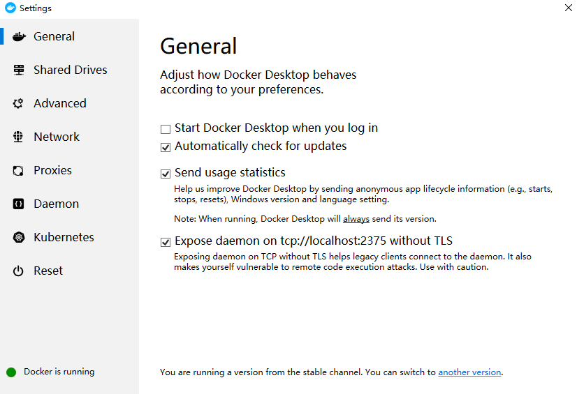
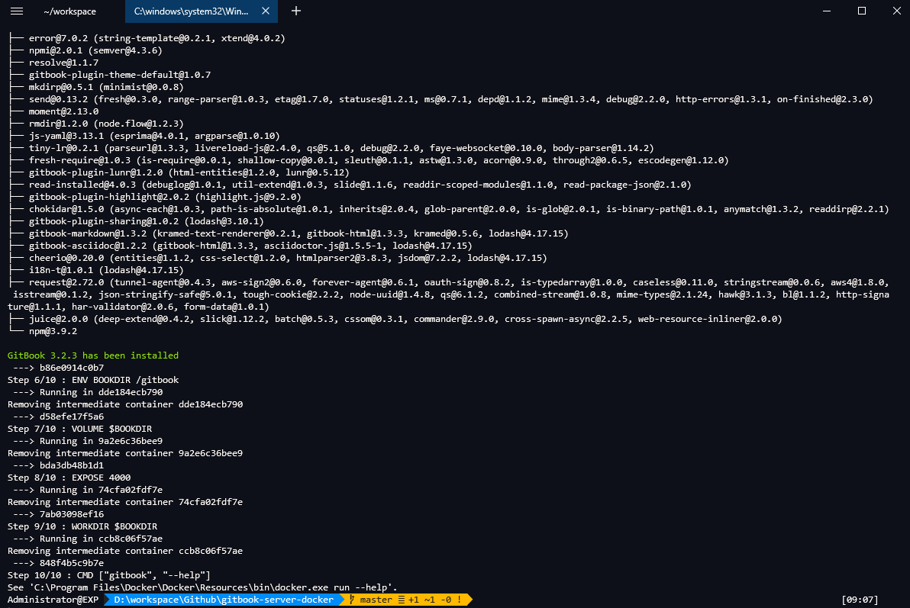
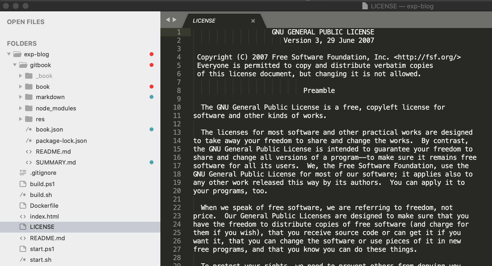
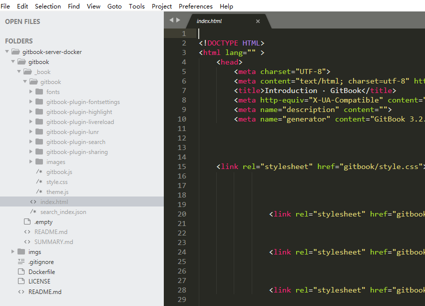
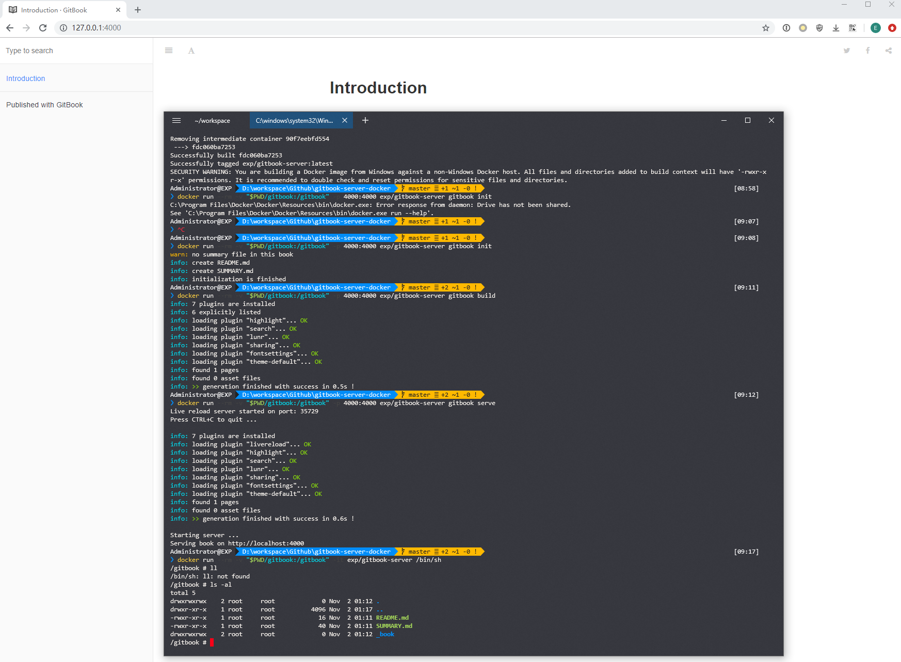
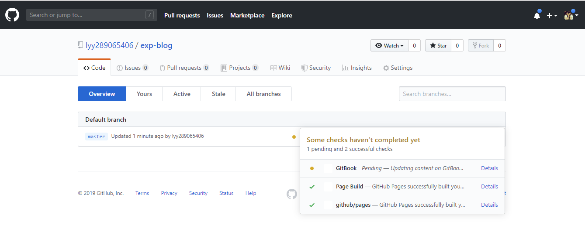
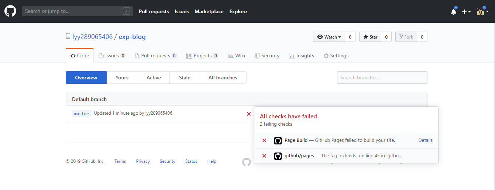
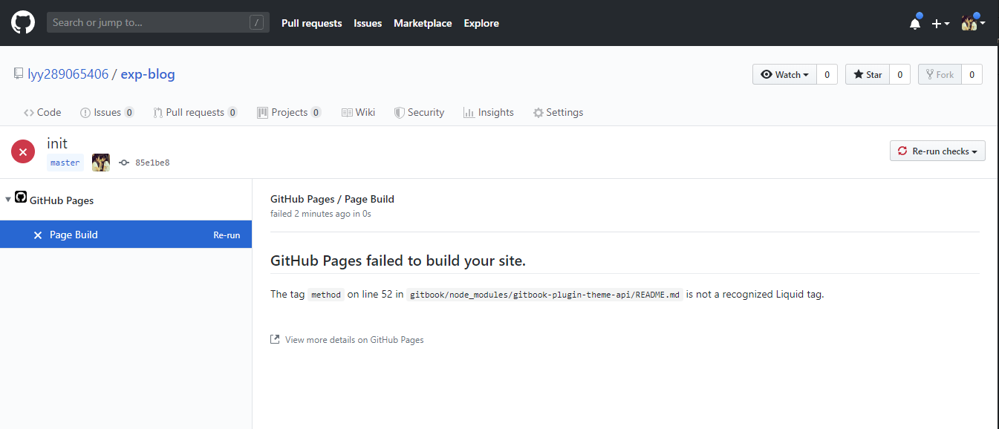
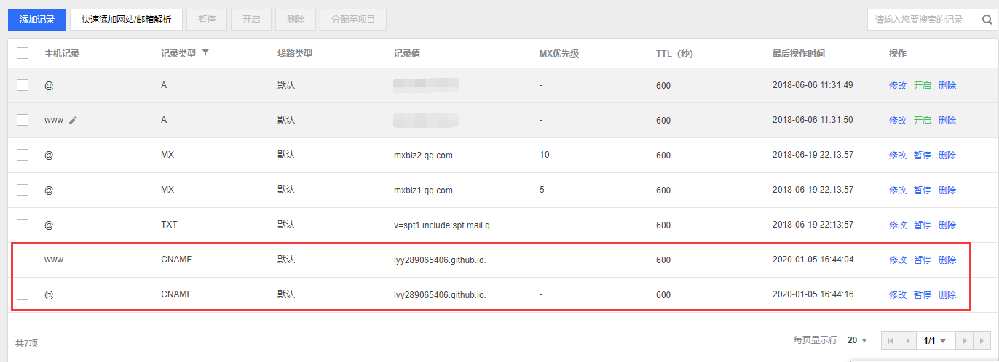
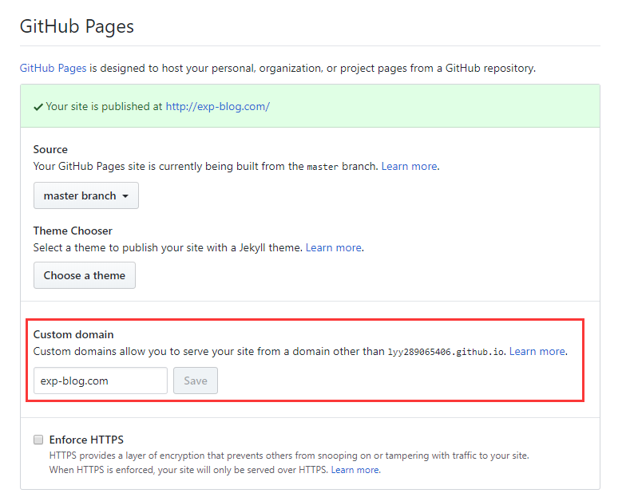

前言
传统的个人网站
在某个知名门户下面注册一个子域名，定制个性化内容。 例如 QQ空间、 博客园、 CSDN 等等。
优点：
- 无技术门槛
- 免费
缺点：
- 站点风格受限： 只能使用有限的模板布置站点
- 文章数据无法直接迁移： 即使某些门户支持导出、也未必能导入到其他门户
稍微有点技术含量的个人网站
租用一台云服务器，搭建一个 HTTP 服务，在其中放入你想展示的内容。
优点：
- 完全个性化：理论上只要你想到的都可以实现
- 能够赚钱： 广告引流、付费内容等
- 站点数据能够迁移： 一般存储在数据库中
缺点：
- 收费： 租用个人云服务器最低配的差不多 ￥1000/年
- 其实并不能赚到什么钱：
· 百万流量广告引流？ 不好意思谷歌邮寄 PIN 码到国内 100% 丢件
· 内容付费？ 抱歉大部分人的文章并不足以让别人掏钱 - 非常繁琐的搭建过程和日常维护，来看一下你需要做什么：
· 申请域名、网站备案： 最快需要 1 个月
· 租用云服务器： 低配怕访问慢、高配怕财务困难
· 搭建 HTTP 服务： nginx、 apache
· 搭建数据库： MySQL、 MariaDB
· 搭建网站平台： wordpress、 Discuz!
· 网站平台模板/插件不好用： css、 js 各种魔改
· 安全加固： 后台被爆破、 前台被钓鱼
· 服务容灾： 进程挂起、 定期备份
· 访问加速： Redis缓存、 CDN
· 搜索引擎不收录： SEO、 提交链接
把这些都处理好之后，终于可以开始发表文章，一切似乎都很安逸很顺利。
但很多问题就是发生了：
- 写了几百篇文章之后，开始发现富文本编辑方式太呕心了
- 突然有一天某个内容解析插件升级之后，文章格式乱套了
- 突然某个 JS 链接被墙之后，发现 latex 公式变代码了
难道想安逸地发表一些文章真的这么困难吗？
直到有一天我发现了 GitBook。
GitBook 简介
GitBook 是一个基于 Node.js 的命令行工具，支持 Markdown 和 AsciiDoc 两种语法格式，可以把这种格式的文本输出为 HTML、 PDF、 eBook 等格式的电子书。
事实上可以认为 GitBook 的本质就是一个文档格式转换工具。
GitBook 社区具有丰富的主题模块和插件模块，而且这些 主题/插件 都是开源的，大部分都可以从 GitHub 上找到，所以可以很简单地找到我们需要的 主题/插件 ，甚至能简单地对其进行微调。
为什么是 GitBook & GitHub
其实当知道 GitBook 可以把 Markdown 转换成 HTML 格式电子书之后，就基本可以确定这个组合了：
- GitHub 天然支持 Markdown 语法，可以直接使用 Markdown 编写文章
- GitHub 可以借用 Git 对文章进行版本管理
- GitHub 为每个仓库提供了 300M 免费空间的 GitHub Pages （只支持 HTML），足够用于发布个人的静态网站
- GitBook 可以把 Markdown 文章转换成 HTML 电子书供 GitHub Pages 发布
- 极简主义： 程序员的网站不需要太多花哨的东西，文章才是核心，站点越简洁越美观
搭建 GitBook 环境
GitBook 在 3.2.3 版本之后就开始收费了，但是收费之后反而阉割了不少功能，不建议使用最新版
为了使得 GitBook 的运行环境可以固化在 3.2.3 版本，这里使用 Docker 实现。
且为了方便使用，我已将其打包成 Docker 镜像，其 Dockerfile 脚本已上传到 GitHub： gitbook-server-docker 。
注：
因为 gitbook 服务是运行在 Docker 中，所以不论使用哪个平台，都要预装好 Docker 环境
但是本文所使用的基础镜像是基于 Linux 的，因此 Docker in Windows 是无法直接安装的
所以针对 Windows 10 ，推荐使用 WSL ( Windows Subsystem for Linux )
通过 WSL 安装 Ubuntu 系统，然后再在 Ubuntu 里面安装 Docker Deamon
最后 Docker in Windows 做端口映射，就可以实现 Windows 到 Linux 的无缝对接
具体的 Windows Docker 环境部署方法可参考 《简书： Win10 内置 Ubuntu 完美使用 Docker in Windows》
至于 Linux 和 Mac 则简单得多，直接安装 Docker Deamon 即可使用，具体方法自行谷歌

构建 GitBook 镜像
首先安装 git 命令行工具，然后 clone 上述的 gitbook-server-docker 仓库到本地：
git clone https://github.com/re-zero-khis/gitbook-server-docker
在命令行环境下 打开本地仓库目录 。 Docker 脚本已经编排好在 ./Dockerfile 中，可以不修改直接使用。
构建 Docker 镜像（镜像名称 exp/gitbook-server 可根据 Docker 规范自定义修改）：
docker build . -t exp/gitbook-server:latest

至此镜像已经安装完毕，下文主要是测试 GitBook 镜像是否可用。
初始化 GitBook 项目
在 Docker 镜像中执行命令 gitbook init：
docker run --rm -v "$PWD/gitbook:/gitbook" exp/gitbook-server gitbook init
该命令会自动创建默认的 GitBook 目录结构。
实际效果就是在工作目录./gitbook下创建两个符合 GitBook 语法的文件README.md和SUMMARY.md。
更多的 GitBook 语法详见 《GitBook 学习笔记》
关于 GitBook 目录结构说明

exp-blog
|-- .gitignore .............. [Git 过滤配置]
|-- Dockerfile .............. [构建 GitBook 本地服务器的 Docker 脚本]
|-- build.ps1 ............... [重新编译博客变更内容，并使其适用于 Github Pages（Windows 脚本）]
|-- build.sh ................ [重新编译博客变更内容，并使其适用于 Github Pages（Linux 脚本）]
|-- index.html .............. [Github Pages 首页（会自动跳转到博客首页）]
|-- gitbook ................. [GitBook 的工作目录，存储博客数据]
| |-- _book ............... [用 GitBook 编译生成的静态网站数据，用于本地测试（因含下划线不被 Github Pages 支持）]
| |-- book ................ [用 build.ps1/sh 脚本所复制 _book 目录的镜像，用于 Github Pages 发布]
| |-- res ................. [存储博客资源的目录]
| |-- markdown ............ [存储博客文章的目录（只有 *.md 文件）]
| |-- README.md ........... [博客介绍文档（固定文件）]
| |-- SUMMARY.md .......... [博客目录索引（固定文件）]
| |-- node_modules ........ [GitBook 的插件目录]
| |-- book.json ........... [GitBook 的插件配置]
| └-- package-lock.json ... [nodojs 插件依赖关系文件（安装插件时会自动更新）]
|-- LICENSE ................. [版权说明]
└-- README.md ............... [此仓库的说明文档]
构建 GitBook 项目
在 Docker 镜像中执行命令 gitbook build：
docker run --rm -v "$PWD/gitbook:/gitbook" exp/gitbook-server gitbook build
该命令会根据 GitBook 文件
README.md和SUMMARY.md构建 html 项目 。
实际效果就是在工作目录./gitbook下构建目录名为_book的静态网页文件 。
本地可以通过./gitbook/_book/index.html测试访问 。

启动 GitBook 服务
在 Docker 镜像中执行命令 gitbook serve：
docker run -d --rm -v "$PWD/gitbook:/gitbook" -p 4000:4000 exp/gitbook-server gitbook serve
该命令效果就是构建一个可以访问
./gitbook/_book/index.html的 Web 服务。

关于前文中 Docker 命令的参数的含义
docker run --rm -v "$PWD/gitbook:/gitbook" -p 4000:4000 exp/gitbook-server <Command>
docker run：运行镜像--rm：退出镜像后自动删除运行时产生的数据（此镜像目的是提供 GitBook 的运行环境，故没必要保留数据）-v "$PWD/gitbook:/gitbook"：把本地工作目录$PWD/gitbook挂载到镜像的工作目录/gitbook（这样运行 GitBook 期间的工作数据就会从本地映射到镜像内，即使镜像退出运行，数据依旧会保留在本地）-p 4000:4000：把镜像内 GitBook 的 4000 服务端口暴露到本地物理机的 4000 端口exp/gitbook-server：目标镜像名称<Command>：要在镜像内执行的命令，如gitbook serve等，更多命令可见 gitbook-cli
发布站点到 GitHub Page
事实上只需要把前面通过 gitbook build 所生成的 _book 目录 commit 到 GitHub， 然后在 GitHub 仓库的 Settings 中启用 GitHub Page 即可。
这里需要注意的是：
- GitHub Page 不允许站点路径以下划线开头，因此在 commit 前需要把
_book重命名为book - GitHub Page 的站点主页是仓库的根目录，而 GitBook 的站点主页是在
_book目录下，为了统一主页，可以在 GitHub 仓库根目录添加一个index.html文件，内容如下：
<!DOCTYPE html>
<html>
<head>
<meta charset="utf-8">
<meta name="robots" content="noarchive" />
<meta name="author" content="EXP" />
<meta http-equiv="X-UA-Compatible" content="IE=edge">
<meta name="viewport" content="width=device-width, initial-scale=1">
<title>EXP-BLOG</title>
<!-- 自动从 Github Pages 的首页跳转到 GitBook 的首页 -->
<meta http-equiv="refresh" content="0; url=./gitbook/book/index.html">
</head>
<body>
</body>
</html>站点优化：安装 GitBook 插件
GitBook 的精粹在于丰富的插件以扩展其功能，插件可通过工作目录下的 book.json 配置并控制，相关说明见 官方文档。
推荐 GitBook 安装的插件可参考 这份清单 。
根据插件命名约定，若 插件名称 为 prism ，则其对应 安装包名称 为 gitbook-plugin-prism 。
以 prism 插件为例，安装方式有两种：
- 通过 GitBook 安装：把插件名称
prism添加到book.json的plugins列表，执行gitbook install命令 - 通过 nodejs 安装：执行
npm install gitbook-plugin-prism命令安装指定插件，然后把插件名称prism配置到book.json的plugins列表使其生效
方法一每次执行都会检查现有插件是否需要更新。
方法二只有特定插件受影响，适合于存在自定义修改过插件代码的情况。
注意， Guthub Pages 不支持使用了 Octopress 框架的插件，详见 《About GitHub Pages and Jekyll》 。
若使用了这类插件，Guthub Pages 是无法发布成功的。 判定是不是使用了这类插件的方法也很简单：
- 提交变更内容后，点击 Github 仓库下的 branch 查看 master 分支
- master 分支会提示最近提交内容的 Guthub Pages 构建情况
- 若构建失败，可以点击 Details 查看详情
- 假如提示
is not a recognised Liquid tag说明就是采用了 Octopress 框架的插件



自定义域名
通过 GitHub Page 发布的站点有个问题，就是 URL 地址不方便记忆。
如果有申请个人域名的话，是可以自定义 GitHub Page 域名的。
首先需要购买域名解析服务，添加 CNAME 规则把个人域名解析到 GitHub Page，然后再在 GitHub Page 配置个人域名即可。

